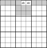
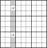
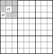
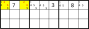
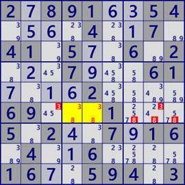
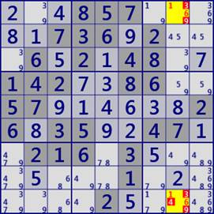
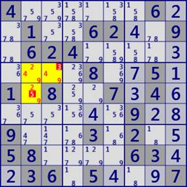
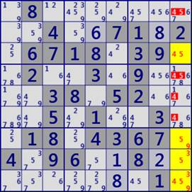
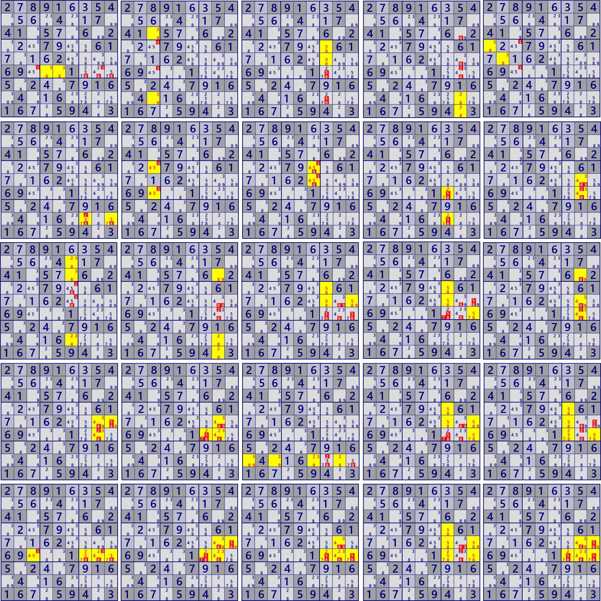
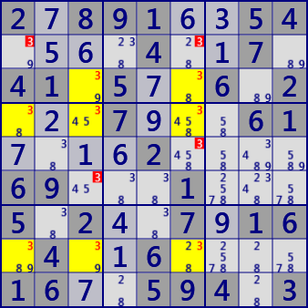

LockedSet
数独の高度な解析アルゴリズムでは、"Locked"という概念が重要です。
Lockedは、セル(群）の候補数字、候補数字の数、セルの配置関係から生じる制限で、
候補数字が限定される、あるいは候補数字が除外されます。
Lockedにはいくつもの種類があり、その数だけ解析アルゴリズムがあります。
（Lockedを訳すと、制限、限定などになると思いますが、あえて訳さずそのまま概念を認めてしまえばよいので、
Lockedを用います）
(1)Naked LockedSet
LockedSetは最も単純なLockedを用いる解析アルゴリズムです。
あるhouseについて、n個のセルに着目するとそれらの候補数字がn個のとき、
このセル群の候補数字はLockedされます。したがって同じHouseの非着目セルから候補数字を除外できます。これをn次のLockedSetと呼ぶことにします。
なお、セル数・候補数字数が5以上の場合は、同じHouseの残りのセル群がLockedSetとなっているので、5次以上のLockedSetは考えないという方法もあります。
全盤面の数字配列を求めるのであれば必要ありません。しかし、数独の解き方を追求する立場からすると、大きなLockedSetを見つけるのは楽しいではありませんか。
後ほど、それらをお見せします。
次の図は”2セル2数字"のLockedSetのイメージです。ab、cd、efにLockedしたとき、色付きセルの候補数字からこれらの候補数字が除外できます。



次の図は、3セル3数字(左）と4セル4数字(右）のLockedSetが成立したセル群のイメージとです。外枠は同じハウス（行・列・ブロック）に属することを表します。 上段は各セルに同じように候補数字が含まれるケースです。下段のように一部の候補数字が欠けている場合もあります。
(2)Hidden LockedSet
Naked LockedSetはセル内に候補数字が明確に表れている場合ですが、セル内に他の候補数字もありLockedSetを構成する数字群が隠れている場合があります。
次の図は上3行を抜き出したもので、候補数字#26に着目するとr1c13のみにあり、2次のHidden LockedSetが成立します（次数はNakedのときと同様）。
Hidden LockedSetの場合には、最初に述べたLockedSetの定義を修正する必要があります。
あるhouseについて、n個の候補数字に着目するとそれらがn個のセルのみにあるとき、このセル群の着目候補数字はLockedされます。したがって同じセル群の非着目候補数字は除外できます。

次の図は、LockedSetの例です。
左図は2-LockedSet (Naked）で、行r6（ブロックb5）のr6c45はいずれも候補数字#38で、2セル2数字の2-LockedSet(Naked)が成立します。
右図は2-LockedSet(Hidden）で、8列c8に着目すると、数字#16の入るのはr19c8の2セルのみで2セル2数字の2-LockedSetが成立します。従って、この2セルでは残りの数字#349は候補から除外できます。


2.891..54....4..7.41.5..6.2...7...61....2....69...1...5.2..7.16.4..6....16..594.3
...857.....736.2...6...48..142..86..57......26.35..47..216.3........1.......2....
次の左図は 3-LockedSet(Hidden）の例です。ブロックb4のr4c23とr5c2は、候補数字249に関して3セル3数字の3-LockedSetが成立します。 右図は 4-LockedSet (Naked）の例です。9列のr3789c9に着目すると、数字3459について4セル4数字の4-LockedSetが成立します。また、右図の9列のr1456c9については4セル4数字の4-LockedSet(Hidden)が成立しています。黄色のセル群と対となるLockedSetです。


4......6..1..62..9.624.........8..5.1.8..7.4.......9..9...3.2..58....63..36.5...7
.8.........4..71.2.6718.39..2..3.9....38.52....5.1..3..18.4.67.4.96..8.........1.
このページの最初の問題(左上から2789…の図）にはLockedSetが25個あります。互いに相補関係にあるLockedSetも見つかります。
- Locked Pair[2D] r6c45 #38
- Locked Pair[2D] r38c3 #39
- Locked Pair[2D] r45c7 #58
- Locked Pair[2D] r89c8 #28
- Locked Pair[2D] r4c1 r5c2 #38
- Locked Pair[2D] (hidden) r8c79 #57
- Locked Pair[2D] (hidden) r46c3 #45
- Locked Pair[2D] (hidden) r45c6 #45
- Locked Pair[2D] (hidden) r68c7 #27
- Locked Pair[2D] (hidden) r56c8 #34
- Locked Triple[3D] r238c6 #238
- Locked Triple[3D] r389c8 #289
- Locked Triple[3D] r4c7 r5c79 #589
- Locked Triple[3D] r45c7 r6c9 #578
- Locked Triple[3D] (hidden) r356c8 #349
- Locked Triple[3D] (hidden) r5c89 r6c8 #349
- Locked Triple[3D] (hidden) r5c8 r6c78 #234
- Locked Quartet[4D] r8c1368 #2389
- Locked Quartet[4D] r4c7 r5c79 r6c9 #5789
- Locked Quartet[4D] r4c7 r5c7 r6c79 #2578
- Locked Quartet[4D] (hidden) r6c3789 #2457
- Locked Quartet[4D] (hidden) r5c89 r6c78 #2349
- Locked Quartet[4D] (hidden) r5c8 r6c789 #2347
- Locked Set[5D] r4c7 r5c79 r6c79 #25789
- Locked Set[5D] (hidden) r5c89 r6c789 #23479
さらに、この場面には別ページで解説する Fishもあります。
- SwordFish #3 BaseSet:R348 CoverSet:C136
- JellyFish #3 BaseSet:R2348CoverSet:C1346
全数字配列が求まる経路(解析手法）はいくつもあります。手法は異なるが、確定や除外されるセル・数字は同じ場合もあります。

Fish(左:SwordFish 右:JellyFish）
